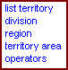

Blacksmith Applications, www.blacksmithapps.com

Lists all territories, and allows you to sort, view and enter territories.
URL Properties: settings/Access_Rights/brokers_search_form.cfm?PageTitle=Territory: list territory
ID Name / Address Division Region Territory
Click a column header (such as Region, for example) to sort the list by that column.
A triangle displays indicating the column currently used for the sort, and whether the sort is ascending or descending. To reverse the sort order of a sort column, click the column header again; the sort order reverses, and the triangle reverses orientation to reflect the change in sort order.
Click an entry in any column to display the actual record and fields for that data item.
Lists divisions, and allows you to add, edit and delete divisions
URL Properties: settings/zone_maintenance.cfm
Division Name Division Number
Add a Division by entering the Division Name and Division Number and clicking the [add] link. A message displays while the information tree for Division data is rebuilt.
To edit a division, click the [edit] link next to the division you want to edit. The division row becomes accessible for editing (click the [save] link to save your changes, or click [cancel] if you decide not to make the change).
To delete a division, click the [delete] link next to the division you want to delete. A message displays saying to click OK to delete the division.
Lists regions, and allows you to add, edit and delete regions
URL Properties: settings/region_maintenance.cfm
Region Name Region Number
Add a Region by entering the Region Name and Region Number and clicking the [add] link. A message displays while the information tree for Region data is rebuilt.
To edit a region, click the [edit] link next to the region you want to edit. The region row becomes accessible for editing (click the [save] link to save your changes, or click [cancel] if you decide not to make the change).
To delete a region, click the [delete] link next to the region you want to delete. A message displays saying to click OK to delete the region.
Lists territories, and allows you to add, edit and delete territories
URL Properties: settings/Market_Area_Maintenance.cfm
Territory Area Name
Add a Territory Area by entering the Territory Name and clicking the [add] link. A message displays while the information tree for Territory data is rebuilt.
To edit a territory, click the [edit] link next to the territory you want to edit. The territory row becomes accessible for editing (click the [save] link to save your changes, or click [cancel]if you decide not to make the change).
To delete a territory, click the [delete] link next to the territory you want to delete. A message displays saying to click OK to delete the territory.
Allows you to view and work with operator assignments on multiple levels.
URL Properties: settings/Operator_Tree/index.cfm
Use the Operators page to search for and select markets, view and assign the postal codes to that market, to assign operators to positions, to assign operators to categories and to assign operators to priorities. You can also create categories and priorities.
By making geographical associations to operators and assigning positions to operators, you control access to data based on customers within a geographical market.